IP地址
含义
主机唯一的标识，保证主机之间的正常通信
一种网络编码，用来确定网络中的一个节点
IP地址由32位二进制（32bit）组成
1
如11010010.01001001.10001100.00000110 =210.73.140.6（十进制，便于记忆）
IP地址的组成
IP地址的分类
- ip地址划分为A,B,C,D,E 5类，每一类有不同的划分规则
- 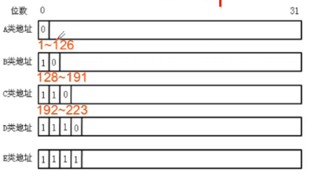
- 公网（互联网）上使用的是 A,B,C
- D类是组播地址—-》keepalived
- E类是科学研究使用的
- A,B,C三类IP地址的组成
- A类的地址：1-126
- 因为127.0.0.1给所有机器的回环测试接口使用了，给本机进行tcp/ip协议的网络测试使用
- 可以容纳2^24=16777214（16777216除去.0和.255）台电脑
- B类的地址：128-191
- 可以容纳2^16=65534（65536除去.0和.255）台电脑
- C类的地址：192-223
- 可以容纳254台电脑（256除去.0和.255）
- 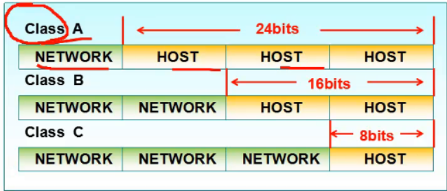
- A类的地址：1-126
- 私有地址
- 满足企业用户在内部网络中使用的需求
- 私有地址不能在因特网中使用
- 私有地址包括3组
- A类：10.0.0.0-10.255.255.255
- B类：172.16.0.0-172.31.255.255
- C类：192.168.0.0-192.168.255.255 小企业254台以内
- 访问www.ip138.com查看ip地址
- ipv4 和ipv6
- ip地址划分为A,B,C,D,E 5类，每一类有不同的划分规则
子网掩码
作用：用来确定IP的网络地址（属于哪个网段）
32个二进制位—》和IP地址很相似
- 对应IP地址的网络部分用1表示
- 对应IP地址的主机部分用0表示
- 32位，分4段，每段8位
IP地址和子网掩码做逻辑“与”运算的到网络地址（网段）
网段：
- 只看网络部分不看主机部分
- 192.10.1.0 —网段号
A,B,C三类地址的默认子网掩码
- A类：255.0.0.0
- B类：255.255.0
- C类：255.255.255.0
子网：就是一个小的网络，也是一个网段
子网掩码的位数对应于ip地址网络部分的位数
有效的IP地址段= 网络部分（网段）+主机部分
- 主机部分全为0表示是网段号，不是一个有效的IP
- 主机部分全为1表示这个地址是广播地址
路由器的作用就是实现跨网段通信的
IP地址规划
- IP地址的作用：用来标识一个节点的网络地址
- 子网划分的原因
- 满足不同网络对IP地址的需求
- 实现网络的层次性
- IP地址分类
- 有类地址
- 无类地址
子网划分
原理
- 网络位向主机位借位来实现子网的划分，将大网划分成小网
- 子网的个数=2^n(n表示网络位向主机位借位的个数)
- 每个子网的有效ip数量= 2^m -2（m表示借位后剩下的位数）
子网划分的应用
- 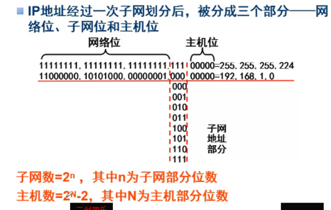
可变长子网掩码（VLSM）
- VLSM允许把子网继续划分为更小的子网
- 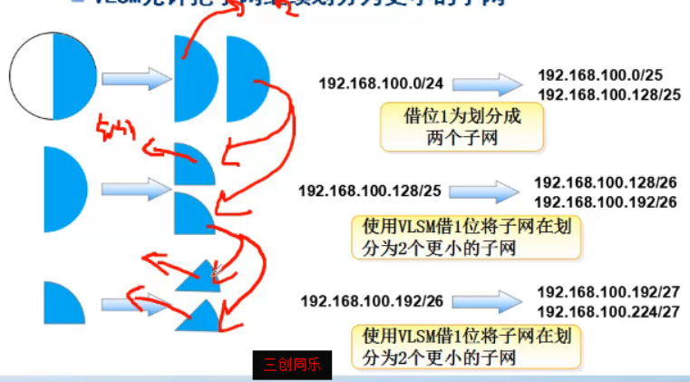
- 子网掩码的长度最多可以借到30位，每个子网只有2个ip地址
- VLSM允许把子网继续划分为更小的子网
子网划分实例
- 公司有 生产部、销售部、财务部、客服部4个部门
- 生产部有主机100台、销售部有主机50台
- 财务部有主机25台、客服部有主机12台
- 公司使用c类地址192.168.100.0/24，如何划分子网？
- 要求算出分配给每个部分的子网的广播地址和有效的ip地址段？
- 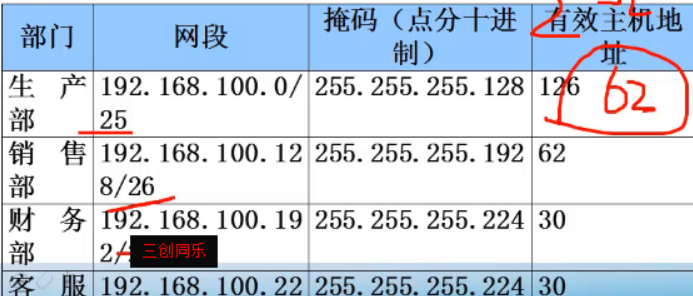
- 公司有 生产部、销售部、财务部、客服部4个部门
解题思路
需要确定这个ip地址是哪个子网的
ip和子网掩码进行与运算
思考还有多少主机位，算出一个子网可以容纳的主机数量
得到广播地址和有效ip地址段
练习
- 第1题
- 172.16.0.0/16的网络，划分成4个网段，算出每个子网的网段号、广播地址、有效的ip地址段
- 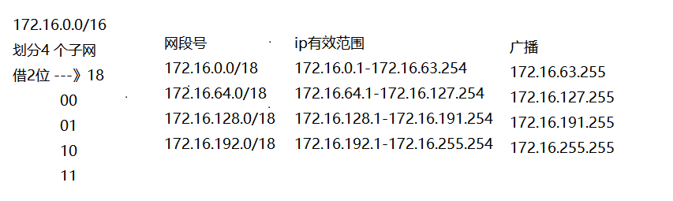
- 第2题
- 12.16.0.0/16的网络，划分成4个网段，算出每个子网的网段号、广播地址、有效的ip地址段
- 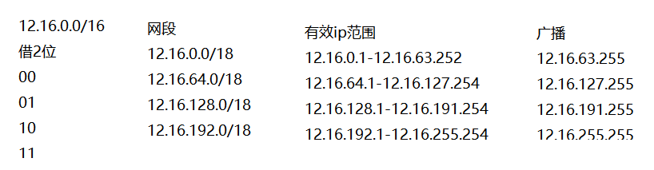
- 第3题
- 10.0.0.0/8的网络，划分成4个网段，算出每个子网的网段号、广播地址、有效的ip地址段
- 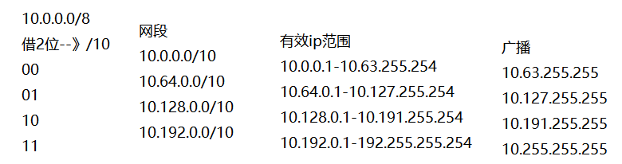
- 第4题
- 用10.10.10.0/24这个网段实现对公司5个部门以及服务器组的IP地址分配（包括管理地址和互联地址）
- 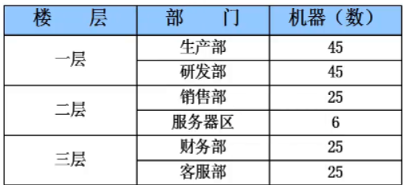
- 解决
- 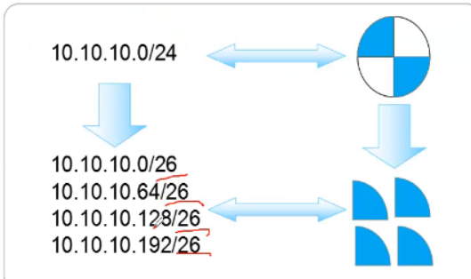
- 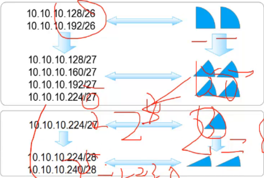
- 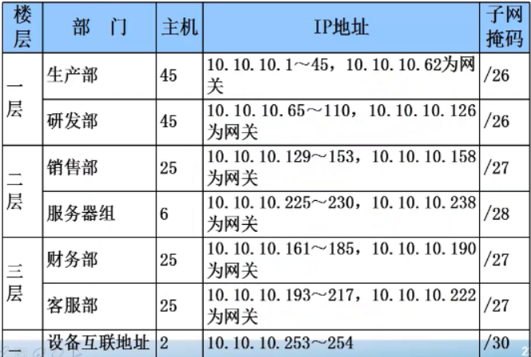
- 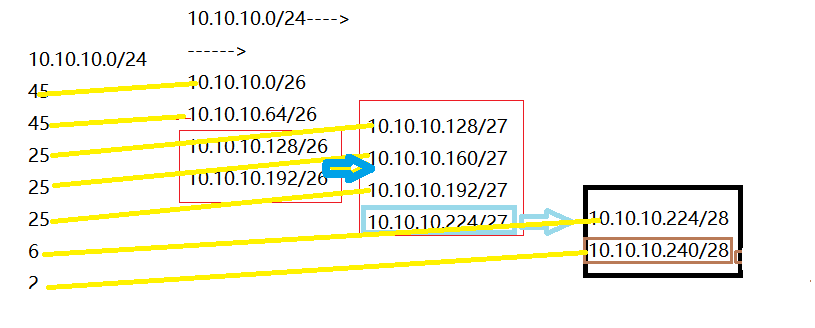
- 第1题
IP地址汇总
把很多ip的网段汇总成一个网段，将很多小网段汇总成一个大网段
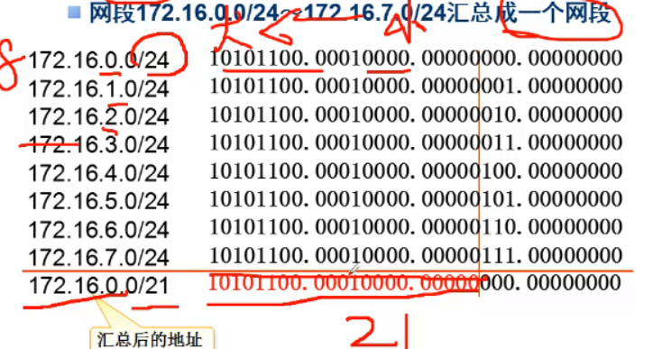
网段汇总：
- 其实就是将很多小的网络汇总成一个大的网络。
- 跟子网划分是相反的过程，用在路由的配置上
- 步骤
- 将所有的网络部分相同的段，算出来，就是汇总后的网络地址
例子
将这四个子网汇总成一个大的网络
1
2
3
4
5
6- 10.10. 0.0/27 ----10.10.00000000.0
- 10.10. 20.0/27 ----10.10.00010100.0
- 10.10. 50.0/27 ----10.10.00110010.0
- 10.10. 100.0/27----10.10.01100100.0
#汇总后网络地址
- 10.10.0.0/17 ----10.10.0 00000000.0
问题：